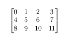

目录
Boost.MultiArray 由多个组件构成. MultiArray 概念定义了多维容器的通用接口. multi_array 是一个模型化 MultiArray 的通用容器类. multi_array_ref 和 const_multi_array_ref 是适配器类. 使用它们, 你可以把任意连续数据块当作 multi_array 来操作. const_multi_array_ref 与 multi_array_ref 的区别在于其元素不能通过其接口修改. 最后, 还有若干辅助类用于创建和特化数组, 并且作为库接口的一部分定义了一些全局对象.
要使用 Boost.MultiArray, 必须在源码中包含头文件 boost/multi_array.hpp. 该文件把以下声明引入作用域:
namespace boost {
namespace multi_array_types {
typedef *unspecified* index;
typedef *unspecified* size_type;
typedef *unspecified* difference_type;
typedef *unspecified* index_range;
typedef *unspecified* extent_range;
typedef *unspecified* index_gen;
typedef *unspecified* extent_gen;
}
template <typename ValueType,
std::size_t NumDims,
typename Allocator = std::allocator<ValueType> >
class multi_array;
template <typename ValueType,
std::size_t NumDims>
class multi_array_ref;
template <typename ValueType,
std::size_t NumDims>
class const_multi_array_ref;
multi_array_types::extent_gen extents;
multi_array_types::index_gen indices;
template <typename Array, int N> class subarray_gen;
template <typename Array, int N> class const_subarray_gen;
template <typename Array, int N> class array_view_gen;
template <typename Array, int N> class const_array_view_gen;
class c_storage_order;
class fortran_storage_order;
template <std::size_t NumDims> class general_storage_order;
}
MultiArray 概念定义了层次化嵌套容器的接口. 它规定了访问元素、遍历容器以及创建数组数据视图的操作. MultiArray 定义了一个灵活的内存模型, 可适应多种数据布局.
在 MultiArray 容器层次结构的每一层 (或每个维度) 上, 都有一组有序容器, 其中每个容器包含数量与类型相同的值. 该容器层次结构的深度即为 MultiArray 的 维数. MultiArray 采用递归定义; 容器层次结构中每一层的容器本身也是 MultiArray 的模型. MultiArray 的每个维度都有自己的大小, 所有维度的大小列表则定义了整个 MultiArray 的 形状. 该层次结构的最底层是一维 MultiArray. 它们的值是所关注的被包含对象, 不属于容器层次结构; 这些就是 MultiArray 的元素.
与其他容器概念一样, MultiArray 导出迭代器用于遍历其值. 此外, 还可以用常见的方括号记法直接寻址各个值.
MultiArray 还规定了创建专用视图的例程. 视图 让你可以把 MultiArray 中底层元素的一个子集当作独立的 MultiArray 来处理. 由于视图引用的是相同的底层元素, 对视图元素所做的修改会反映到原 MultiArray 中. 例如, 给定一个由元素构成的 3 维 "cube", 可以把其中 2 维的切片当作独立的 MultiArray 来看待. 视图使用 index_gen 和 index_range 对象创建. index_range 表示某个维度中将包含进视图的元素. index_gen 聚合范围数据并进行簿记, 以确定要返回的视图类型. MultiArray 的 operator[] 必须以 N 次链式调用 index_gen::operator[] 所得的结果作为实参, 即:
indices[a0][a1]...[aN];
其中 N 是 MultiArray 的维数, indices 是类型为 index_gen 的对象. 视图类型取决于传给 index_gen 的退化维度数量. 当对某个维度传给 index_gen 单个索引时, 就会出现退化维度. 例如, 若 indices 是类型为 index_gen 的对象, 则下面的例子:
indices[index_range(0,5)][2][index_range(0,4)];
具有一个退化的第二维度. 由上述规格生成的视图将有 2 个维度, 其形状为 5 x 4. 如果把上面的 "2" 替换为另一个 index_range 对象, 例如:
indices[index_range(0,5)][index_range(0,2)][index_range(0,4)];
那么视图将有 3 个维度.
MultiArray 导出有关其被包含元素内存布局的信息. 其元素的内存模型完全由 4 个属性定义: 原点、形状、索引基和步长. 原点是以 a[0][0]...[0] 方式访问的元素在内存中的地址, 其中 a 是一个 MultiArray. 形状是一个数字列表, 指定各维度上容器的大小. 例如, 第一个维度大小是最外层容器的大小, 第二个维度大小是其子容器的大小, 以此类推. 索引基是一个带符号值列表, 指定容器中第一个值的索引. 同一维度上的所有容器共享相同的索引基. 注意, 由于索引基可以是正值, 因此即使原点不存在, 也能确定 MultiArray 元素在内存中的位置. 步长决定索引值如何映射到内存偏移量. 它们可适应多种可能的元素布局. 例如, 一个二维数组的元素可以按行存储 (即每行的元素连续存放), 也可以按列存储 (即每列的元素连续存放).
MultiArray 概念的两个概念检查类 (ConstMultiArrayConcept 和 MutableMultiArrayConcept) 位于命名空间 boost::multi_array_concepts 中 (在 <boost/multi_array/concept_checks.hpp> 内).
下面是用于描述 MultiArray 接口的符号说明.
表 1. 记法
A | 作为 MultiArray 模型的类型 |
a,b | Objects of type A |
NumDims | 与 A 关联的数值维度参数. |
Dims | 满足 0<Dims<NumDims 的某个数值维度参数. |
indices | 通过若干次对 index_gen::operator[](index_range) 的链式调用所创建的对象. |
index_list | 类型是 集合 之模型的对象 |
idx | 一个带符号整数值. |
tmp | An object of type
boost::array<index,NumDims> |
表 2. 关联类型
| 类型 | 说明 |
|---|---|
value_type | 这是容器的值类型. 若 NumDims == 1, 则为 element; 否则为直接嵌套容器的值类型. |
reference
| 这是被包含值的引用类型. 若 NumDims == 1, 则为 element&; 否则与 template subarray<NumDims-1>::type 为同一类型. |
const_reference
| 这是被包含值的 const 引用类型. 若 NumDims == 1, 则为 const element&; 否则与 template const_subarray<NumDims-1>::type 为同一类型. |
size_type
| 这是一个无符号整数类型. 它主要用于指定数组形状. |
difference_type
| 这是一个带符号整数类型, 用于表示两个迭代器之间的距离. 它与 std::iterator_traits<iterator>::difference_type 为同一类型. |
iterator | 这是遍历 A 之值的迭代器. 若 NumDims == 1, 则它是
Random Access Iterator 的模型; 否则它是 随机访问遍历迭代器、可读迭代器、可写迭代器 和
Output Iterator 的模型. |
const_iterator
| 这是遍历 A 之值的 const 迭代器. |
reverse_iterator
| 这是反向迭代器, 用于从后向前遍历 A 的值. |
const_reverse_iterator
| 这是 const 反向迭代器. A. |
element
| 这是存储在 MultiArray 层次结构底部的对象类型. 它与 template subarray<1>::value_type 相同 |
index
| 这是一个带符号整数类型, 用于对 A 进行索引. 它还用于表示步长和索引基. |
index_gen
| 此类型用于创建一个由 index_range 构成的元组, 传给 operator[] 以创建 array_view<Dims>::type 对象. |
index_range
| 此类型指定 MultiArray 某个维度上的索引范围. 该范围将通过 array_view<Dims>::type 对象可见. |
template subarray<Dims>::type
| 这是具有 Dims 个维度的子数组类型. 它是第 (NumDims - Dims) 维的引用类型, 该维属于 A; 它本身也是 MultiArray 的模型. |
template const_subarray<Dims>::type
| 这是 const 子数组类型. |
template array_view<Dims>::type
| 这是具有 Dims 个维度的视图类型. 它通过调用 operator[]( 返回. 它是 MultiArray 的模型. |
template
const_array_view<Dims>::type
| 这是具有 Dims 个维度的 const 视图类型. |
表 3. 有效表达式
| 表达式 | 返回类型 | 语义 |
|---|---|---|
A::dimensionality | size_type | 此编译期常量表示数组的维数 (注意 A::dimensionality == NumDims). |
a.shape() | const size_type* | 它返回一个含有 NumDims 个元素的列表, 指定数组各维度的大小. |
a.strides() | const index* | 它返回一个含有 NumDims 个元素的列表, 指定与数组各维度关联的步长. 访问值时, strides 用于计算元素在内存中的位置. |
a.index_bases() | const index* | 它返回一个含有 NumDims 个元素的列表, 指定数组各维度第一个元素的数值索引. |
a.origin() |
element*, 若 a 可变; 否则为 const element*. | 它返回表达式 a[0][0]...[0]. 所访问元素的地址. 若索引基为正, 该元素并不存在, 但该地址仍可用于在给定索引的情况下定位一个有效元素. |
a.num_dimensions() | size_type | 它返回数组的维数 (注意 a.num_dimensions() == NumDims). |
a.num_elements() | size_type | 它返回数组所含元素的数量. 它等价于以下代码:
std::accumulate(a.shape(),a.shape+a.num_dimensions(),
size_type(1),std::multiplies<size_type>());
|
a.size() | size_type | 它返回 a 所含值的数量. 它等价于 a.shape()[0];
|
a(index_list) |
element&; 若 a 可变, 则为 const element&. | 此表达式访问 a 的特定元素. index_list 是用于寻址所返回元素的唯一索引集合. 它等价于以下代码 (不考虑中间临时对象):
// multiply indices by strides
std::transform(index_list.begin(), index_list.end(),
a.strides(), tmp.begin(), std::multiplies<index>()),
// add the sum of the products to the origin
*std::accumulate(tmp.begin(), tmp.end(), a.origin());
|
a.begin() |
iterator, 若 a 可变; 否则为 const_iterator. | 它返回指向 a 开头的迭代器. |
a.end() |
iterator, 若 a 可变; 否则为 const_iterator. | 它返回指向 a 末尾的迭代器. |
a.rbegin() |
reverse_iterator, 若 a 可变; 否则为 const_reverse_iterator. | 它返回一个反向迭代器, 指向反转后的 a 的开头. |
a.rend() |
reverse_iterator, 若 a 可变; 否则为 const_reverse_iterator. | 它返回一个反向迭代器, 指向反转后的 a 的末尾. |
a[idx] |
reference, 若 a 可变; 否则为 const_reference. | 它返回一个引用类型, 绑定到索引 idx 处 a 的值. 注意, 若 i 是该维度的索引基, 则上述表达式返回第 (idx-i) 个元素 (从零开始计数). 该表达式等价于 *(a.begin()+idx-a.index_bases()[0]);. |
a[indices] |
array_view<Dims>::type, 若 a 可变; 否则为 const_array_view<Dims>::type. | 此表达式生成数组的一个视图, 视图由 index_range 与 index 值决定, 这些值用于构造 indices. |
a == b | bool | 它对 a 与 b 的值进行字典序比较. 元素类型必须是 EqualityComparable 的模型, 此表达式才有效. |
a < b | bool | 它对 a 与 b 的值进行字典序比较. 元素类型必须是 LessThanComparable 的模型, 此表达式才有效. |
a <= b | bool | 它对 a 与 b 的值进行字典序比较. 元素类型必须同时是 EqualityComparable 和 LessThanComparable 的模型, 此表达式才有效. |
a > b | bool | 它对 a 与 b 的值进行字典序比较. 元素类型必须同时是 EqualityComparable 和 LessThanComparable 的模型, 此表达式才有效. |
a >= b | bool | 它对 a 与 b 的值进行字典序比较. 元素类型必须是 LessThanComparable 的模型, 此表达式才有效. |
表 4. 不变式
| 有效范围 | [a.begin(),a.end()) 是一个有效范围. |
| 范围大小 |
a.size() == std::distance(a.begin(),a.end());.
|
| 完整性 | 对范围 [a.begin(),a.end()) 的迭代将遍历每个 value_type, 它们属于 a. |
| 访问器等价性 | 调用 a[a1][a2]...[aN] (其中 N==NumDims) 的结果与调用 a(index_list) 相同, 其中 index_list 是一个 集合, 包含值 a1...aN. |
以下 MultiArray 关联类型定义为现有 MultiArray 创建视图的接口. 下面描述它们在概念中的接口与作用.
index_range 对象表示带步长的半开区间. 它们被聚合起来 (使用 index_gen 对象) 并传给 MultiArray 的 operator[] 以创建数组视图. 创建视图时, 每个 index_range 表示 MultiArray 某一维度上的一段有效索引. 通过所指定的这组范围访问到的元素将包含在构造出的视图中. 在某些情况下, 创建 index_range 时未指定起始值或结束值. 此时, 该对象被解释为从 MultiArray 某一维度的开头开始, 到其结尾结束.
index_range 对象可以通过多种方式构造和修改, 以便方便而清晰地表达索引范围. 为了指定范围, index_range 支持一组构造函数、可修改成员函数, 以及一种涉及不等号运算符的新颖写法. 使用不等号运算符, 半开区间 [5,10) 可按如下方式指定:
5 <= index_range() < 10;
或者
4 < index_range() <= 9;
等等. 下面描述 index_range 的接口.
表 7. 有效表达式
| 表达式 | 返回类型 | 语义 |
|---|---|---|
index_range(idx1,idx2,idx3) | index_range | 它构造一个 index_range, 表示区间 [idx1,idx2), 步长为 idx3. |
index_range(idx1,idx2) | index_range | 它构造一个 index_range, 表示区间 [idx1,idx2), 步长为 1. 它等价于 index_range(idx1,idx2,1). |
index_range() | index_range | 它构造一个 起始值和结束值未指定的 index_range. |
i.start(idx1) | index& | 它把 i 的起始索引设为 idx. |
i.finish(idx) | index& | 它把 i 的结束索引设为 idx. |
i.stride(idx) | index& | 它把 i 的步长设为 idx. |
i.start() | index | 它返回 i 的起始索引. |
i.finish() | index | 它返回 i 的结束索引. |
i.stride() | index | 它返回 i 的步长. |
i.get_start(idx) | index | 若 i 指定了起始值, 则此表达式等价于 i.start(). 否则它返回 idx. |
i.get_finish(idx) | index | 若 i 指定了结束值, 则此表达式等价于 i.finish(). 否则它返回 idx. |
i.size(idx) | size_type | 若 i 同时指定了结束值和起始值, 则此表达式等价于 (i.finish()-i.start())/i.stride(). 否则它返回 idx. |
i < idx | index | 这是指定结束值的另一种语法. 这种记法不会把 idx 包含在有效索引范围内. 它等价于 index_range(r.start(), idx, r.stride()). |
i <= idx | index | 这是指定结束值的另一种语法. 这种记法会把 idx 包含在有效索引范围内. 它等价于 index_range(r.start(), idx + 1, r.stride()). |
idx < i | index | 这是指定起始值的另一种语法. 这种记法不会把 idx 包含在有效索引范围内. 它等价于 index_range(idx + 1, i.finish(), i.stride()). |
idx <= i | index | 这是指定起始值的另一种语法. 这种记法会把 idx1 包含在有效索引范围内. 它等价于 index_range(idx, i.finish(), i.stride()). |
i + idx | index | 此表达式把 i 的起始值和结束值上移 idx. 它等价于 index_range(r.start()+idx1, r.finish()+idx, r.stride()). |
i - idx | index | 此表达式把 i 的起始值和结束值上移 idx. 它等价于 index_range(r.start()-idx1, r.finish()-idx, r.stride()). |
index_gen 聚合多个 index_range 对象, 以指定视图参数. 对 operator[] 的链式调用会把用于在 MultiArray 中实例化新视图的范围与维度信息存储下来.
表 8. 记法
Dims,Ranges | 无符号整数值. |
x | 类型 template gen_type<Dims,Ranges>::type 的对象. |
i | 类型 index_range 的对象. |
idx | 类型 index 的对象. |
表 9. 关联类型
| 类型 | 说明 |
|---|---|
index | 这是一个带符号整数类型, 用于指定退化维度. |
size_type | 这是一个无符号整数类型, 用于报告 index_range 所表示范围的大小. |
template gen_type::<Dims,Ranges>::type | 此类型生成器命名 Dims 次链式调用 index_gen::operator[] 的结果. Ranges 参数由所指定的退化范围数量 (即对 operator[](index) 的调用次数) 决定. 注意 index_gen 与 gen_type<0,0>::type 是同一类型. |
表 10. 有效表达式
| 表达式 | 返回类型 | 语义 |
|---|---|---|
index_gen() | gen_type<0,0>::type | 它构造一个 index_gen 对象. 该对象随后可用于生成由 index_range 值构成的元组. |
x[i] | gen_type<Dims+1,Ranges+1>::type
| 返回一个新对象, 它在原有全部 index_range 对象之外还包含 i.. 对 operator[] 的链式调用是聚合 index_range 对象的手段. |
x[idx] | gen_type<Dims,Ranges+1>::type
| 返回一个新对象, 它在原有全部 index_range 对象之外还包含一个退化范围 index_range(idx,idx).. 注意这不等价于 x[index_range(idx,idx)]., 后者将返回类型为 gen_type<Dims+1,Ranges+1>::type 的对象. |
Boost.MultiArray 定义了一个数组类 multi_array 以及两个适配器类 multi_array_ref 和 const_multi_array_ref. 这三个类都是 MultiArray 的模型, 因此共享大量功能. multi_array_ref 与 multi_array 的区别在于: multi_array 管理自己的内存, 而 multi_array_ref 则被传入一块预期由外部管理的内存. const_multi_array_ref 与 multi_array_ref 的区别在于: 它所适配的底层元素不能通过其接口修改, 但某些数组属性 (包括数组形状和索引基) 仍可更改. 这些类的共有功能在下文描述.
注释: 前置条件、效果与实现. 在以下各节中, 将使用小的 C++ 代码片段来指定前置条件、效果和后置条件等约束. 这些约束不一定描述数组组件的底层实现, 而是描述指定操作的预期输入与行为. 不满足前置条件将导致未定义行为. 并非所有效果 (如拷贝构造函数等) 都必须完全复现; 用于说明效果的代码片段旨在抓住所述操作的实质.
查询.
element* data(); const element* data() const;
它返回指向包含数组数据的连续内存块开头的指针. 若数组的所有维度都从 0 开始索引且按升序存储, 则此函数等价于 origin(). 注意 const_multi_array_ref 只提供此函数的 const 版本.
element* origin(); const element* origin() const;
它返回 multi_array 的原点元素. 注意 const_multi_array_ref 只提供此函数的 const 版本. (MultiArray 所要求)
const index* index_bases();它返回 multi_array 的索引基. (MultiArray 所要求)
const index* strides();它返回 multi_array 的步长. (MultiArray 所要求)
const size_type* shape();它返回 multi_array 的形状. (MultiArray 所要求)
比较器.
bool operator==(const *array-type*& rhs); bool operator!=(const *array-type*& rhs); bool operator<(const *array-type*& rhs); bool operator>(const *array-type*& rhs); bool operator>=(const *array-type*& rhs); bool operator<=(const *array-type*& rhs);
每个比较器对两个数组的值类型执行字典序比较. (MultiArray 所要求)
前置条件. element 必须支持与在 multi_array 上调用的比较器相对应的那个比较器.
复杂度. O(num_elements()).
修改器.
template <typename SizeList> void reshape(const SizeList& sizes)
它改变 multi_array 的形状. 元素数量和索引基保持不变, 但嵌套容器层次结构中每一层上的值的数量可能改变.
SizeList 要求. SizeList 必须是 Collection 的模型.
前置条件.
std::accumulate(sizes.begin(),sizes.end(),size_type(1),std::times<size_type>()) == this->num_elements(); sizes.size() == NumDims;
后置条件.
std::equal(sizes.begin(),sizes.end(),this->shape) == true;
template <typename BaseList> void reindex(const BaseList& values);
它把 multi_array 的索引基改为与 values 中的值相对应.
BaseList 要求. BaseList 必须是 Collection 的模型.
前置条件. values.size() == NumDims;
后置条件. std::equal(values.begin(),values.end(),this->index_bases());
void reindex(index value);
它把 multi_array 所有维度的索引基改为 value.
后置条件.
std::count_if(this->index_bases(),this->index_bases()+this->num_dimensions(),
std::bind_2nd(std::equal_to<index>(),value)) ==
this->num_dimensions();
multi_array 是一个支持随机访问迭代的多维容器. 其维数在编译期固定, 但其形状和所含元素的数量在构造时指定. 在 multi_array 的生存期内, 元素数量保持不变, 但容器的形状可以改变. multi_array 使用可替换的分配器管理其数据元素.
所建模的概念. MultiArray、CopyConstructible. 视元素类型而定, 它也可能同时是 EqualityComparable 和 LessThanComparable 的模型.
概要.
namespace boost {
template <typename ValueType,
std::size_t NumDims,
typename Allocator = std::allocator<ValueType> >
class multi_array {
public:
// types:
typedef ValueType element;
typedef *unspecified* value_type;
typedef *unspecified* reference;
typedef *unspecified* const_reference;
typedef *unspecified* difference_type;
typedef *unspecified* iterator;
typedef *unspecified* const_iterator;
typedef *unspecified* reverse_iterator;
typedef *unspecified* const_reverse_iterator;
typedef multi_array_types::size_type size_type;
typedef multi_array_types::index index;
typedef multi_array_types::index_gen index_gen;
typedef multi_array_types::index_range index_range;
typedef multi_array_types::extent_gen extent_gen;
typedef multi_array_types::extent_range extent_range;
typedef *unspecified* storage_order_type;
// template typedefs
template <std::size_t Dims> struct subarray;
template <std::size_t Dims> struct const_subarray;
template <std::size_t Dims> struct array_view;
template <std::size_t Dims> struct const_array_view;
static const std::size_t dimensionality = NumDims;
// constructors and destructors
multi_array();
template <typename ExtentList>
explicit multi_array(const ExtentList& sizes,
const storage_order_type& store = c_storage_order(),
const Allocator& alloc = Allocator());
explicit multi_array(const extents_tuple& ranges,
const storage_order_type& store = c_storage_order(),
const Allocator& alloc = Allocator());
multi_array(const multi_array& x);
multi_array(const const_multi_array_ref<ValueType,NumDims>& x);
multi_array(const const_subarray<NumDims>::type& x);
multi_array(const const_array_view<NumDims>::type& x);
multi_array(const multi_array_ref<ValueType,NumDims>& x);
multi_array(const subarray<NumDims>::type& x);
multi_array(const array_view<NumDims>::type& x);
~multi_array();
// modifiers
multi_array& operator=(const multi_array& x);
template <class Array> multi_array& operator=(const Array& x);
// iterators:
iterator begin();
iterator end();
const_iterator begin() const;
const_iterator end() const;
reverse_iterator rbegin();
reverse_iterator rend();
const_reverse_iterator rbegin() const;
const_reverse_iterator rend() const;
// capacity:
size_type size() const;
size_type num_elements() const;
size_type num_dimensions() const;
// element access:
template <typename IndexList>
element& operator()(const IndexList& indices);
template <typename IndexList>
const element& operator()(const IndexList& indices) const;
reference operator[](index i);
const_reference operator[](index i) const;
array_view<Dims>::type operator[](const indices_tuple& r);
const_array_view<Dims>::type operator[](const indices_tuple& r) const;
// queries
element* data();
const element* data() const;
element* origin();
const element* origin() const;
const size_type* shape() const;
const index* strides() const;
const index* index_bases() const;
const storage_order_type& storage_order() const;
// comparators
bool operator==(const multi_array& rhs);
bool operator!=(const multi_array& rhs);
bool operator<(const multi_array& rhs);
bool operator>(const multi_array& rhs);
bool operator>=(const multi_array& rhs);
bool operator<=(const multi_array& rhs);
// modifiers:
template <typename InputIterator>
void assign(InputIterator begin, InputIterator end);
template <typename SizeList>
void reshape(const SizeList& sizes)
template <typename BaseList> void reindex(const BaseList& values);
void reindex(index value);
template <typename ExtentList>
multi_array& resize(const ExtentList& extents);
multi_array& resize(extents_tuple& extents);
};
构造函数.
template <typename ExtentList>
explicit multi_array(const ExtentList& sizes,
const storage_order_type& store = c_storage_order(),
const Allocator& alloc = Allocator());
它使用指定的参数构造一个 multi_array. sizes 指定所构造 multi_array 的形状. store 指定数组各维度的存储顺序或内存布局. alloc 用于分配被包含的元素.
ExtentList 要求.
ExtentList 必须是 Collection 的模型.
前置条件. sizes.size() == NumDims;
explicit multi_array(extent_gen::gen_type<NumDims>::type ranges,
const storage_order_type& store = c_storage_order(),
const Allocator& alloc = Allocator());
它使用指定的参数构造一个 multi_array. ranges 指定所构造 multi_array 的形状和索引基, 它是 NumDims 次链式调用 extent_gen::operator[] 的结果. store 指定数组各维度的存储顺序或内存布局. alloc 是用于分配内存以存储 multi_array 元素的分配器.
multi_array(const multi_array& x); multi_array(const const_multi_array_ref<ValueType,NumDims>& x); multi_array(const const_subarray<NumDims>::type& x); multi_array(const const_array_view<NumDims>::type& x); multi_array(const multi_array_ref<ValueType,NumDims>& x); multi_array(const subarray<NumDims>::type& x); multi_array(const array_view<NumDims>::type& x);
这些构造函数都构造一个 multi_array, 并对 x 执行深拷贝.
复杂度. 此操作执行 O(x.num_elements()) 次 element 拷贝构造函数调用.
multi_array();
它构造一个形状为 (0,...,0) 且不含任何元素的 multi_array.
关于构造函数的注释. multi_array 构造表达式
multi_array<int,3> A(boost::extents[5][4][3]);
以及
boost::array<multi_array_base::index,3> my_extents = {{5, 4, 3}};
multi_array<int,3> A(my_extents);
是等价的.
修改器.
multi_array& operator=(const multi_array& x); template <class Array> multi_array& operator=(const Array& x);
它把 x 逐元素拷贝到当前 multi_array 中.
Array 要求. Array 必须是 MultiArray 的模型.
前置条件.
std::equal(this->shape(),this->shape()+this->num_dimensions(), x.shape());
后置条件.
(*.this) == x;
复杂度. 赋值运算符执行 O(x.num_elements()) 次 element 拷贝构造函数调用.
template <typename InputIterator> void assign(InputIterator begin, InputIterator end);
它把范围 [begin,end) 中的元素拷贝到数组中. 它等价于 std::copy(begin,end,this->data()).
前置条件. std::distance(begin,end) == this->num_elements();
复杂度. assign 成员函数执行 O(this->num_elements()) 次 ValueType 拷贝构造函数调用.
multi_array& resize(extent_gen::gen_type<NumDims>::type extents); template <typename ExtentList> multi_array& resize(const ExtentList& extents);
此函数把数组重新调整为由 extents 指定的形状, 该实参可以是生成的维度列表, 也可以是 Collection 概念的一个模型. 数组内容会被尽可能保留; 若新数组大小更小, 则会丢失一些数据. 调整数组大小所创建的任何新元素都用 element 的默认构造函数初始化.
查询.
storage_order_type& storage_order() const;
此查询返回与所论 multi_array 相关联的存储顺序对象. 它可用于构造一个具有相同存储顺序的新数组.
multi_array_ref 是一个多维容器适配器. 它在任意连续的元素块上提供 MultiArray 接口. multi_array_ref 导出与 multi_array 相同的接口, 构造函数除外.
所建模的概念.
multi_array_ref 是 MultiArray、CopyConstructible 的模型; 视元素类型而定, 它也可能同时是 EqualityComparable 和 LessThanComparable 的模型. 此处仅对 multi_array 参考手册中未描述的操作提供详细说明.
概要.
namespace boost {
template <typename ValueType,
std::size_t NumDims>
class multi_array_ref {
public:
// types:
typedef ValueType element;
typedef *unspecified* value_type;
typedef *unspecified* reference;
typedef *unspecified* const_reference;
typedef *unspecified* difference_type;
typedef *unspecified* iterator;
typedef *unspecified* const_iterator;
typedef *unspecified* reverse_iterator;
typedef *unspecified* const_reverse_iterator;
typedef multi_array_types::size_type size_type;
typedef multi_array_types::index index;
typedef multi_array_types::index_gen index_gen;
typedef multi_array_types::index_range index_range;
typedef multi_array_types::extent_gen extent_gen;
typedef multi_array_types::extent_range extent_range;
typedef *unspecified* storage_order_type;
// template typedefs
template <std::size_t Dims> struct subarray;
template <std::size_t Dims> struct const_subarray;
template <std::size_t Dims> struct array_view;
template <std::size_t Dims> struct const_array_view;
static const std::size_t dimensionality = NumDims;
// constructors and destructors
template <typename ExtentList>
explicit multi_array_ref(element* data, const ExtentList& sizes,
const storage_order_type& store = c_storage_order());
explicit multi_array_ref(element* data, const extents_tuple& ranges,
const storage_order_type& store = c_storage_order());
multi_array_ref(const multi_array_ref& x);
~multi_array_ref();
// modifiers
multi_array_ref& operator=(const multi_array_ref& x);
template <class Array> multi_array_ref& operator=(const Array& x);
// iterators:
iterator begin();
iterator end();
const_iterator begin() const;
const_iterator end() const;
reverse_iterator rbegin();
reverse_iterator rend();
const_reverse_iterator rbegin() const;
const_reverse_iterator rend() const;
// capacity:
size_type size() const;
size_type num_elements() const;
size_type num_dimensions() const;
// element access:
template <typename IndexList>
element& operator()(const IndexList& indices);
template <typename IndexList>
const element& operator()(const IndexList& indices) const;
reference operator[](index i);
const_reference operator[](index i) const;
array_view<Dims>::type operator[](const indices_tuple& r);
const_array_view<Dims>::type operator[](const indices_tuple& r) const;
// queries
element* data();
const element* data() const;
element* origin();
const element* origin() const;
const size_type* shape() const;
const index* strides() const;
const index* index_bases() const;
const storage_order_type& storage_order() const;
// comparators
bool operator==(const multi_array_ref& rhs);
bool operator!=(const multi_array_ref& rhs);
bool operator<(const multi_array_ref& rhs);
bool operator>(const multi_array_ref& rhs);
bool operator>=(const multi_array_ref& rhs);
bool operator<=(const multi_array_ref& rhs);
// modifiers:
template <typename InputIterator>
void assign(InputIterator begin, InputIterator end);
template <typename SizeList>
void reshape(const SizeList& sizes)
template <typename BaseList> void reindex(const BaseList& values);
void reindex(index value);
};
构造函数.
template <typename ExtentList>
explicit multi_array_ref(element* data,
const ExtentList& sizes,
const storage_order& store = c_storage_order(),
const Allocator& alloc = Allocator());
它使用指定的参数构造一个 multi_array_ref. sizes 指定所构造 multi_array_ref 的形状. store 指定数组各维度的存储顺序或内存布局. alloc 用于分配被包含的元素.
ExtentList 要求.
ExtentList 必须是 Collection 的模型.
前置条件. sizes.size() == NumDims;
explicit multi_array_ref(element* data,
extent_gen::gen_type<NumDims>::type ranges,
const storage_order& store = c_storage_order());
它使用指定的参数构造一个 multi_array_ref. ranges 指定所构造 multi_array_ref 的形状和索引基, 它是 NumDims 次链式调用 extent_gen::operator[] 的结果. store 指定数组各维度的存储顺序或内存布局.
multi_array_ref(const multi_array_ref& x);
它构造 x 的一个浅拷贝.
复杂度. 常量时间 (相比之下, 可与 multi_array 类的拷贝构造函数作比较).
修改器.
multi_array_ref& operator=(const multi_array_ref& x); template <class Array> multi_array_ref& operator=(const Array& x);
它把 x 逐元素拷贝到当前 multi_array_ref 中.
Array 要求. Array 必须是 MultiArray 的模型.
前置条件.
std::equal(this->shape(),this->shape()+this->num_dimensions(), x.shape());
后置条件.
(*.this) == x;
复杂度. 赋值运算符执行 O(x.num_elements()) 次 element 拷贝构造函数调用.
const_multi_array_ref 是一个多维容器适配器. 它在任意连续的元素块上提供 MultiArray 接口. const_multi_array_ref 导出与 multi_array 相同的接口, 构造函数除外.
所建模的概念.
const_multi_array_ref 是 MultiArray、CopyConstructible 的模型; 视元素类型而定, 它也可能同时是 EqualityComparable 和 LessThanComparable 的模型. 此处仅对 multi_array 参考手册中未描述的操作提供详细说明.
概要.
namespace boost {
template <typename ValueType,
std::size_t NumDims,
typename TPtr = const T*>
class const_multi_array_ref {
public:
// types:
typedef ValueType element;
typedef *unspecified* value_type;
typedef *unspecified* reference;
typedef *unspecified* const_reference;
typedef *unspecified* difference_type;
typedef *unspecified* iterator;
typedef *unspecified* const_iterator;
typedef *unspecified* reverse_iterator;
typedef *unspecified* const_reverse_iterator;
typedef multi_array_types::size_type size_type;
typedef multi_array_types::index index;
typedef multi_array_types::index_gen index_gen;
typedef multi_array_types::index_range index_range;
typedef multi_array_types::extent_gen extent_gen;
typedef multi_array_types::extent_range extent_range;
typedef *unspecified* storage_order_type;
// template typedefs
template <std::size_t Dims> struct subarray;
template <std::size_t Dims> struct const_subarray;
template <std::size_t Dims> struct array_view;
template <std::size_t Dims> struct const_array_view;
// structors
template <typename ExtentList>
explicit const_multi_array_ref(TPtr data, const ExtentList& sizes,
const storage_order_type& store = c_storage_order());
explicit const_multi_array_ref(TPtr data, const extents_tuple& ranges,
const storage_order_type& store = c_storage_order());
const_multi_array_ref(const const_multi_array_ref& x);
~const_multi_array_ref();
// iterators:
const_iterator begin() const;
const_iterator end() const;
const_reverse_iterator rbegin() const;
const_reverse_iterator rend() const;
// capacity:
size_type size() const;
size_type num_elements() const;
size_type num_dimensions() const;
// element access:
template <typename IndexList>
const element& operator()(const IndexList& indices) const;
const_reference operator[](index i) const;
const_array_view<Dims>::type operator[](const indices_tuple& r) const;
// queries
const element* data() const;
const element* origin() const;
const size_type* shape() const;
const index* strides() const;
const index* index_bases() const;
const storage_order_type& storage_order() const;
// comparators
bool operator==(const const_multi_array_ref& rhs);
bool operator!=(const const_multi_array_ref& rhs);
bool operator<(const const_multi_array_ref& rhs);
bool operator>(const const_multi_array_ref& rhs);
bool operator>=(const const_multi_array_ref& rhs);
bool operator<=(const const_multi_array_ref& rhs);
// modifiers:
template <typename SizeList>
void reshape(const SizeList& sizes)
template <typename BaseList> void reindex(const BaseList& values);
void reindex(index value);
};
构造函数.
template <typename ExtentList>
explicit const_multi_array_ref(TPtr data,
const ExtentList& sizes,
const storage_order& store = c_storage_order());
它使用指定的参数构造一个 const_multi_array_ref. sizes 指定所构造 const_multi_array_ref 的形状. store 指定数组各维度的存储顺序或内存布局.
ExtentList 要求.
ExtentList 必须是 Collection 的模型.
前置条件. sizes.size() == NumDims;
explicit const_multi_array_ref(TPtr data,
extent_gen::gen_type<NumDims>::type ranges,
const storage_order& store = c_storage_order());
效果. 它使用指定的参数构造一个 const_multi_array_ref. ranges 指定所构造 const_multi_array_ref 的形状和索引基, 它是 NumDims 次链式调用 extent_gen::operator[] 的结果. store 指定数组各维度的存储顺序或内存布局.
const_multi_array_ref(const const_multi_array_ref& x);
效果. 它构造 x 的一个浅拷贝.
namespace multi_array_types {
typedef *unspecified* index;
typedef *unspecified* size_type;
typedef *unspecified* difference_type;
typedef *unspecified* index_range;
typedef *unspecified* extent_range;
typedef *unspecified* index_gen;
typedef *unspecified* extent_gen;
}
命名空间 multi_array_types 定义了与 multi_array、multi_array_ref 和 const_multi_array_ref 相关联且不依赖于模板参数的类型. 这些类型普遍用于所有 Boost.MultiArray 组件. 它们定义在一个命名空间中, 可从中方便地访问. 除 extent_gen 和 extent_range 之外, 这些类型承担 MultiArray 所要求的同名角色, 并已在 MultiArray 的概念定义中描述. extent_gen 和 extent_range 在下文描述.
extent_range 对象定义半开区间. 它们向 multi_array、multi_array_ref 和 const_multi_array_ref 构造函数提供形状和索引基信息. 多个 extent_range 以聚合形式传给数组构造函数 (详见 extent_gen).
概要.
class extent_range {
public:
typedef multi_array_types::index index;
typedef multi_array_types::size_type size_type;
// Structors
extent_range(index start, index finish);
extent_range(index finish);
~extent_range();
// Queries
index start();
index finish();
size_type size();
};所建模的概念. DefaultConstructible、CopyConstructible
方法与类型.
extent_range(index start, index finish)此构造函数定义半开区间 [start,finish). 表达式 finish 必须大于 start.
extent_range(index finish)此构造函数定义半开区间 [0,finish). finish 的值必须为正.
index start()此函数返回该范围表示的第一个索引.
index finish()此函数返回半开区间的上边界值. 注意该范围不包含此值.
size_type size()此函数返回指定范围的大小. 它等价于 finish()-start().
extent_gen 类定义了一个接口, 用于聚合数组形状与索引信息并传给 multi_array、multi_array_ref 或 const_multi_array_ref 构造函数. 其接口模拟了 C++ 中声明内建数组类型的语法. 例如, 虽然在 C++ 中一个由 int 值构成的 3 维数组会声明为:
int A[3][4][5],
一个类似的 multi_array 则声明为:
multi_array<int,3> A(extents[3][4][5]).
概要.
template <std::size_t NumRanges>
class *implementation_defined* {
public:
typedef multi_array_types::index index;
typedef multi_array_types::size_type size_type;
template <std::size_t NumRanges> class gen_type;
gen_type<NumRanges+1>::type operator[](const range& a_range) const;
gen_type<NumRanges+1>::type operator[](index idx) const;
};
typedef *implementation_defined*<0> extent_gen;
方法与类型.
template gen_type<Ranges>::type此类型生成器用于指代 Ranges 次链式调用 extent_gen::operator[]. 的结果. 类型 extent_gen 与 gen_type<0>::type 相同.
gen_type<NumRanges+1>::type
operator[](const extent_range& a_range) const;此函数返回一个新对象, 它在原有全部 extent_range 对象之外还包含 a_range.. extent_range 对象通过对 operator[] 的链式调用进行聚合.
gen_type<NumRanges+1>::type
operator[](index idx) const;此函数返回一个新对象, 它在原有全部 extent_range 对象之外还包含 extent_range(0,idx).. 此函数让数组构造函数获得与传统 C 多维数组声明类似的语法.
为语法上的便利, Boost.MultiArray 在其接口中定义了两个全局对象. 这些对象扮演对象生成器的角色; 涉及它们的表达式会创建其他所需的对象.
在某些情况下, 这两个全局对象可能被视为过多的开销. 要避免构造它们, 只需先定义预处理器符号 BOOST_MULTI_ARRAY_NO_GENERATORS, 再包含 boost/multi_array.hpp.
namespace boost {
multi_array_base::extent_gen extents;
}
Boost.MultiArray 的数组类在构造时使用 extents 全局对象来指定数组形状. 例如, 一个 3×3×3 的 multi_array 按如下方式构造:
multi_array<int,3> A(extents[3][3][3]);
同一个数组也可以通过在局部显式声明一个 extent_gen 对象来创建, 但全局对象使这种声明变得不必要.
Boost.MultiArray 提供特征类 subarray_gen、const_subarray_gen、array_view_gen 和 const_array_view_gen, 用于在函数模板内命名数组的关联类型. 通常这并不比嵌套类型生成器更方便, 但本库作者发现某些 C++ 编译器不能正确处理嵌套在函数模板参数类型中的模板. 这些生成器正是针对这一缺陷的变通办法. 下面的代码片段展示了 array_view_gen 特征类与数组所关联的 array_view 类型之间的对应关系:
template <typename Array>
void my_function() {
typedef typename Array::template array_view<3>::type view1_t;
typedef typename boost::array_view_gen<Array,3>::type view2_t;
// ...
}
在上面的例子中, view1_t 与 view2_t 的类型相同.
多维数组虽然表示元素的容器层次结构, 但最终这些元素必须以某种方式布置在内存中. 因此, 同一个多维数组在内存中可以有多种表示方式.
例如, 考虑下面以矩阵记法给出的二维数组:

上述数组在 C++ 中的表达如下:
int a[3][4] = { 0, 1, 2, 3, 4, 5, 6, 7, 8, 9, 10, 11 };
这是按行优先存储的一个例子, 每行的元素连续存放. 虽然 C++ 透明地处理数组元素的访问, 但你也可以手动管理数组及其索引. 其在内存中的一种表示方式如下:
int a[] = { 0, 1, 2, 3, 4, 5, 6, 7, 8, 9, 10, 11 };
int s[] = { 4, 1 };
使用后一种 a 声明和步长 s, 可用如下表达式访问数组的元素 a(i,j):
*a+i*s[0]+j*s[1]
.
同一个二维数组也可以按列布置, 如下所示:
int a[] = { 0, 4, 8, 1, 5, 9, 2, 6, 10, 3, 7, 11 };
int s[] = { 3, 1 };
注意这里的步长有所不同. 因此, 上面给出的访问值的表达式同样适用于这对数据和步长.
除维度顺序之外, 也可以按降序存储任何一个维度. 例如, 回到第一个例子, 该例数组的第一个维度 (即各行) 可以反向存储, 结果如下:
int data[] = { 8, 9, 10, 11, 4, 5, 6, 7, 0, 1, 2, 3 };
int *a = data + 8;
int s[] = { -4, 1 };
注意在本例中必须把 a 显式设置为原点. 在前面的例子中, 内存中存储的第一个元素就是原点; 而这里不再如此.
也可以反过来: 反转第二个维度 (即各列), 而各行按升序存储:
int data[] = { 3, 2, 1, 0, 7, 6, 5, 4, 11, 10, 9, 8 };
int *a = data + 3;
int s[] = { 4, -1 };
最后, 两个维度都可以按降序存储:
int data[] = {11, 10, 9, 8, 7, 6, 5, 4, 3, 2, 1, 0};
int *a = data + 11;
int s[] = { -4, -1 };
上述所有数组都是等价的. 无论内存布局如何, 上面给出的关于 a(i,j) 的表达式都会得到相同的值. 如上所述, Boost.MultiArray 数组可以用自定义的存储参数创建. 因此, 现有数据可以通过 multi_array_ref 或 const_multi_array_ref 进行适配, 以符合数组抽象. 这一功能的常见用途是包装必须与 Fortran 例程互操作的数组, 使它们在 C++ 和 Fortran 两个层面都能被自然地操作. 以下各节描述用于指定内存布局的 Boost.MultiArray 组件.
class c_storage_order {
c_storage_order();
};
c_storage_order 用于指定数组使用与原始 C++ 多维数组相同的布局存储元素, 即从最后一个维度到第一个维度. 这是本库所提供数组的默认存储顺序.
class fortran_storage_order {
fortran_storage_order();
};
fortran_storage_order 用于指定数组使用与 Fortran 多维数组相同的内存布局存储元素, 即从第一个维度到最后一个维度.
template <std::size_t NumDims>
class general_storage_order {
template <typename OrderingIter, typename AscendingIter>
general_storage_order(OrderingIter ordering, AscendingIter ascending);
};
general_storage_order 允许用户为数组内容指定任意的内存布局. 构造出的对象会传给数组构造函数, 以指定存储顺序.
OrderingIter 和 AscendingIter 必须是 InputIterator 概念的模型. 两个迭代器都必须引用一个含有 NumDims 个元素的范围. AscendingIter 指向可转换为 bool 的对象. true 的值表示一个维度按升序存储, 而 false 表示一个维度按降序存储. OrderingIter 指定各维度的存储顺序.